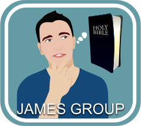

STUDIES IN THE BIBLE MINISTRY
STUDIES IN THE BIBLE is a 30-lesson series where we send 3 lessons that can be completed in your own timeframe. There is absolutely no cost as we include self-addressed stamped envelopes to return the completed lessons. We will check your knowledge of what you have studied and return the graded lessons with 3 new lessons. You will not be contacted in any way other than sending you the next set of lessons.
Click here to enroll.
JAMES GROUP MINISTRY
The JAMES GROUP helps people discover who they are intended to be. We help them realize what God intended for them and help them find it, restoring them to a peaceful existence.

ENGLISH AS A SECOND LANGUAGE MINISTRY
ENGLISH AS A SECOND LANGUAGE shares Jesus in the community by teaching English and U.S. Citizenship to speakers of other languages who desire to improve their English skills. The class meets on Wednesday evenings at 7:00 PM.
LADIES MINISTRY
Our LADIES MINISTRY is a very active group at Webb Chapel. Ladies Bible Study meets each Tuesday from 10 AM to 11:30 AM. The lessons will be taught by several different ladies. Our biggest event of the year is a Ladies Day in the Spring, followed by several other gatherings throughout the year. All ladies are encouraged and welcomed to participate.
BROTHERS KEEPERS
THE BROTHERS KEEPERS ministry at Webb Chapel is dedicated to meeting the needs of the Webb Chapel members through the strengthening of our relationships with one another and by providing help in times of need. Everyone at Webb Chapel is part of one of the 9 Care Groups.
THE MISSIONS COMMITTEE MINISTRY
THE MISSIONS COMMITTEE consists of members of the Webb Chapel congregation. Its purpose is to ensure that the funding provided by the church for local and international evangelism is allocated in a manner which best spreads the gospel throughout the world. We currently provide monetary support to missionaries in the Ukraine, Mexico, Guyana, Bermuda, Cambodia, and the French speaking countries of Africa and the South Pacific. In addition to missionaries, we also provide funds to organizations such as Nations University, Eastern European Missions and Main Street church of Christ in Dallas, Texas, each dedicated to spreading the gospel.
CHILDREN'S MINISTRY
OUR CHILDREN'S MINISTRY at Webb Chapel is focused on growing the next generation of disciples. Each Sunday, we offer an age appropriate worship for our children followed by Bible classes for children 2 years old through 5th grade. We also host several events throughout the year, including fun summer activities such as game night, pool parties, service activities and holiday specific events like our Fall Festival and Christmas play.